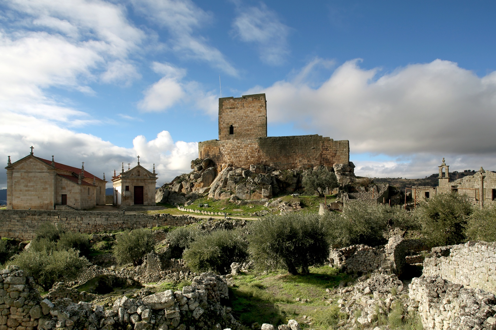
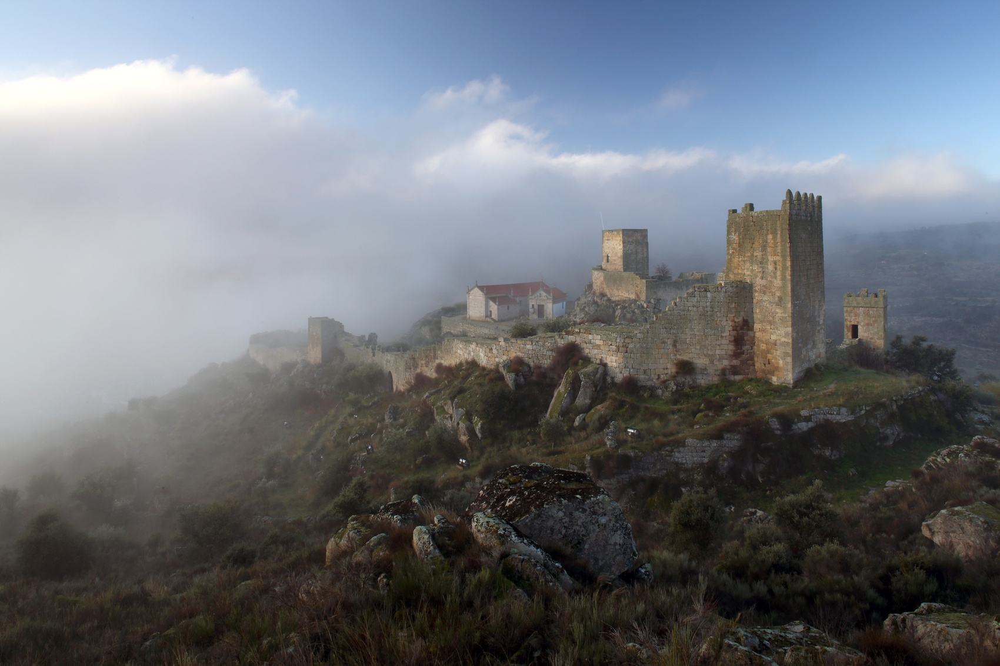
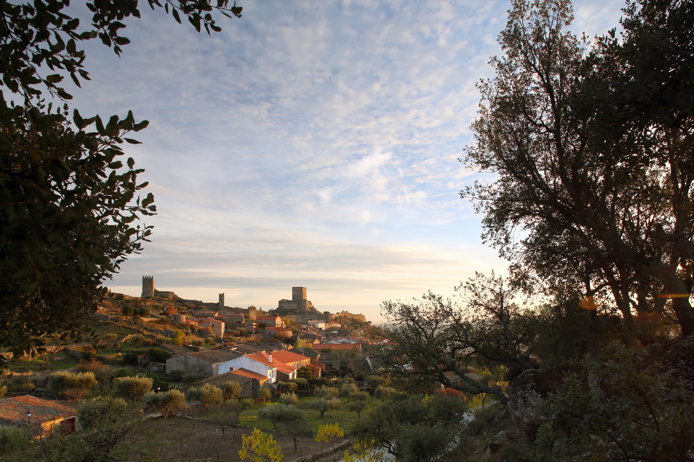
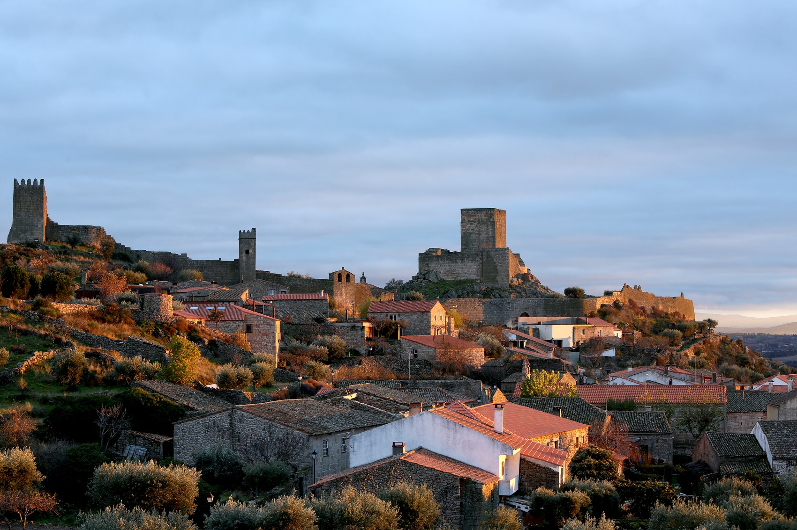

Marialva
Sobre
Marialva fica a poucos minutos da cidade de Mêda. Esta Aldeia Histórica, num cenário que revela uma das relíquias vivas da ancestralidade portuguesa, transporta o visitante às raízes mais profundas da história do país. As ruas, ladeadas por edifícios resistentes ao tempo, conduzem à cidadela cercada pelas muralhas cujas ruínas é fácil perder a noção do tempo. Povoada pelos aravos, povo lusitano, foi posteriormente conquistada pelos romanos, seguidos dos árabes, até à vitória final de D. Fernando, o Magno, em 1063, na sua emblemática conquita das Beiras.

História

A Aldeia de Marialva dista 7 Km da sede do concelho da Mêda, na margem esquerda da ribeira de Marialva. É constituída por três núcleos distintos: a Cidadela ou Vila no interior do Castelo, agora despovoada; o Arrabalde que prolonga a Vila para além da zona amuralhada; e a Devesa, situada a sul da cidadela, que se estende pela planície até à ribeira de Marialva, e assenta sobre a antiga cidade romana. De facto, as origens longínquas de Marialva parecem remontar ao tempo da antiga Cidade de Aravor, fundada pelos Túrdulos no séc. VI a.C. Este castro, situado numa eminência rochosa sobranceira aos campos da Devesa, foi o principal núcleo da comunidade dos Aravos, sendo conhecido por Castro dos Aravos.

Com a chegada dos Romanos o nome alterou-se para Civitas Aravorum, que foi reconstruida no tempo de Adriano e Trajano, tendo sido um importante ponto de confluência e cruzamento de vias, entre as quais a Via Imperial da Guarda a Numão. Os Godos instalaram-se também no monte, primeira ocupação cristã, mudando-lhe o nome para S. Justo. A esta ocupação seguiram-se os Árabes que terão dado à cidadela o nome de Malva, que reconquistada por D. Fernando Magno de Leão em 1063, lhe chamou Marialva.

Despovoada pelas lutas da Reconquista, D. Afonso Henriques mandou-a repovoar e concedeu-lhe o primeiro foral (1179). D. Sancho I reconquistou-a em 1200, altura em que o povoado extravasou a cerca amuralhada, formando-se assim o Arrabalde que apresenta uma malha urbana de traçado predominantemente medieval, onde proliferam igrejas, capelas, casas quinhentistas e senhoriais, a par de um conjunto de habitações rurais com características típicas da casa beirã. D. Dinis, que criou a Feira em 1286, e D. Manuel, que lhe concedeu Foral Novo (1512), procederam a obras no castelo, transformando Marialva numa das mais imponentes e fortes praças de guerra do reino.

Dada a localização fronteiriça de Marialva - e estimulada pela Feira (dia 15 de cada mês) que concedia diversos privilégios aos moradores e feirantes - iniciou-se no séc. XIII a fixação de judeus, cujo número aumentou durante o reinado de D. Manuel formando mesmo uma judiaria.
D. Afonso V deu o título de Conde de Marialva a D. Vasco Coutinho (1440), que se destacara nas campanhas militares do Norte de África; mais tarde passou a marquesado por mercê de D. Afonso VI (1675), tendo sido primeiro Marquês de Marialva D. António Luís de Menezes, terceiro Conde de Cantanhede, pelo seu papel decisivo na Revolução de 1640.
O que ver